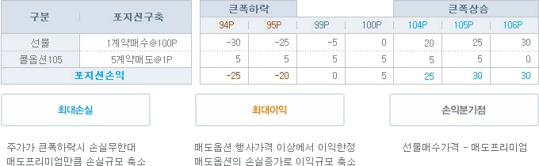
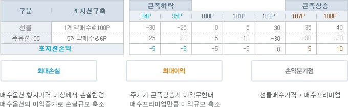

차익거래는 가격왜곡이 발생했을 경우 정상가격으로 시장가격이 변화한다는 점을 포착하여 거래비용을 감안하고도 수익이 발생될 경우 옵션과 선물을 결합하여 차익을 획득하는 것을 말합니다.
이러한 차익거래는 예상과 반대로 가격이나 변동성이 움직였을 때 손실이 발생하는 방향성전략이나 변동성전략과는 달리 시장가격과 이론가격사이에 거래비용이상의 괴리가 발생했을 경우 무위험이익을 획득할 수 있습니다.
헤지거래는 기초자산의 가격변동위험을 회피하고 운용이익의 향상을 꾀하고자 하는 것으로 선물을 이용한 헤지거래의 경우 손익을 고정시켜 손실발생위험을 회피하고 동시에 이익발생기회도 박탈되는데 반해, 옵션을 이용한 헤지거래는 손실위험을 제한시키고 동시에 이익발생기회도 누릴 수 있는 장점이 있습니다.
이러한 차익거래와 헤지거래를 간단하게 표로 요약하여 살펴보고, 컨버젼, 리버설, 커버드콜, 방어적풋에 대하여 살펴보도록 하죠.
| 차익거래 | 헤지거래 | |
|---|---|---|
| 목표 | 가격왜곡발생시 무위험이익획득 | 가격변동위험 회피와 운용이익 향상 |
| 전략 | 컨버젼, 리버설 | 커버드콜, 방어적풋 |
KOSPI 200 옵션은 투자자들의 수급에 따라 현재가가 형성되므로 이론가격에서 크게 벗어날 수 있습니다. 이러한 경우 차익거래가 발생되어 옵션가격의 비정상적인 괴리상태가 해소되고, 투자자들은 차익거래를 통해 무위험수익을 획득할 수 있습니다. 이러한 차익거래는 먼저 옵션을 합성하여 선물과 동일한 상품을 만들거나, 선물과 옵션을 합성하여 옵션과 동일한 상품을 만들어 개념잡기에서 배운 풋콜패리티라는 등식이 성립되지 않는 가격괴리발생시 고평가된 상품을 매도하고, 저평가된 상품을 매수한 후 각 종목이 정상가격으로 돌아왔을 때 청산을 통해 차익을 획득하게 됩니다.
단, 이와같은 차익거래는 차익거래구축시점에서 발생하는 호가갭과 매매수수료와 같은 비용 등으로 인하여 가격괴리가 발생되었다고 해서 모두 이익을 획득하게 되는 것은 아닙니다. 이러한 요소들을 감안하여 매매를 하여야 하므로 기회가 자주 발생하지는 않습니다.
이러한 차익거래 구축과정을 도표로 요약하면 아래와 같습니다.
| 차익거래 구축조건 | 차익거래 포지션구축 | 최종손익 | |
|---|---|---|---|
| 컨버젼 | 합성선물이 선물보다 고평가 | 합성선물매도(콜매도+풋매수)+선물매수 | (콜-풋+행사가격)-선물매입가 |
| 리버설 | 합성선물이 선물보다 저평가 | 합성선물매수(콜매수+풋매도)+선물매도 | (풋-콜-행사가격)+선물매도가 |

콜옵션 100매도 5계약(매도가격 3P), 풋옵션 100매수 5계약(매수가격 2P)
선물 매수 1계약(매수가격 100P)
행사가격 100인 콜옵션의 현재가격이 3P, 풋옵션의 현재가격이 2P이고, 선물가격이 102일 경우 합성선물매수 가격은 풋매도프리미엄에 콜매수프리미엄을 차감하고 행사가격을 차감하여 산출하므로 101P(=2P-3P-100P)이고, 선물가격은 102P이므로 합성선물이 저평가되어있는 상황입니다. 이 경우 합성선물매수를 하고 선물매도를 하여 가격차이인 1P의 이익을 취하는 리버설을 구축하여 지수변동과 상관없이 무위험수익을 획득할 수 있습니다.
| 컨버젼 구축 | 만기지수 90P일때 손익 | 만기지수 110P일때 손익 | |
|---|---|---|---|
| 합성선물매도 |
콜옵션100 5계약매도@3P 풋옵션100 5계약매수@2P 합성선물매도가격 : 101P |
콜옵션100 : 15 풋옵션100 : 40 합성선물매도 : 55 |
콜옵션100 : -35 풋옵션100 : -10 합성선물매도 : -45 |
| 선물매수 | KOSPI 200선물 1계약 매수@100P | -50 | 50 |
| 포지션손익 | 5 | 5 | 5 |
콜옵션100매수 5계약(매수가격 3P), 풋옵션100매도 5계약(매도가격 2P), 선물매도 1계약
(매도가격 102P)
행사가격 100인 콜옵션의 현재가격이 3P, 풋옵션의 현재가격이 2P이고, 선물가격이 102일 경우 합성선물매수가격은 풋매도프리미엄에 콜매수프리미엄을 차감하고 행사가격을 차감하여 산출하므로 101P(=2P-3P-100P)이고, 선물가격은 102P이므로 합성선물이 저평가되어있는 상황입니다. 이 경우 합성선물매수를 하고 선물매도를 하여 가격차이인 1P의 이익을 취하는 리버설을 구축하여 지수변동과 상관없이 무위험수익을 획득할 수 있습니다.
| 리버설 구축 | 만기지수 90P일때 손익 | 만기지수 110P일때 손익 | |
|---|---|---|---|
| 합성선물매도 |
콜옵션100 5계약매수@3P 풋옵션100 5계약매도@2P 합성선물매수가격 : 101P |
콜옵션100 : -15 풋옵션100 : -40 합성선물매도 : -55 |
콜옵션100 : 35 풋옵션100 : 10 합성선물매도 : 45 |
| 선물매수 | KOSPI 200선물 1계약 매도@102P | 60 | -40 |
| 포지션손익 | 5 | 5 | 5 |
주식을 보유하고 있는 상태에서 주가하락위험에 노출되는데, 이러한 위험을 제한시키고, 동시에 이익도 획득하고자 하는 전략이 헤지거래입니다. 선물을 이용할 경우 위험을 완전히 상쇄시키는 대신 이익획득기회도 없어지지만, KOSPI 200 옵션을 이용하면 옵션의 비대칭적 손익구조로 인하여 이익획득기회도 확보할 수 있습니다.
이러한 헤지거래 구축과정과 최종손익을 아래도표에서 요약된 내용을 살펴보고, 커버드콜과 방어적풋을 실제사례를 들어 살펴보도록 하죠.
| 커버드콜(콜옵션매도) | 방어적풋(풋옵션매수) | |
|---|---|---|
| 구축조건 | 소폭의 주가하락 예상시 | 큰폭의 가격하락 예상시 |
| 헤지종목선택 |
상승시 높은이익 원할 경우 OTM매도 하락시 손실최소화를 원할 경우 ITM매도 |
하락시 손실한정 원할 경우 ITM매수 상승시 이익확보 원할 경우 OTM매수 |
| 만기손익 |
|
|
현재 KOSPI 200지수 100P, 주식대신 선물 매수 1계약(매수가격 100P) 보유시
콜옵션 105 매도 5계약(매도가격 1P)
큰폭하락시 손실위험헤지보다 상승시 이익을 확보하는 부분에 초점을 맞추어 현재 KOSPI 200지수가 100P인 상태에서 OTM옵션을 매도한 결과 주가상승시 더 큰 폭의 이익이 발생되고, 반대로 주가가 조금만 하락하여도 손실이 발생되기 시작하고, 손실규모는 ITM옵션을 매도했을 때보다 커집니다.

현재 KOSPI 200지수 100P, 주식대신 선물 매수 1계약(매수가격 100P) 보유시
풋옵션 105 매수 5계약(매수가격 6P)
주가상승시 이익확보보다 주가의 큰폭하락시 손실위험헤지에 초점을 맞추어 현재 KOSPI 200지수가 100P인 상태에서 ITM옵션을 매수한 결과 OTM옵션을 매수했을 때보다 지수하락폭이 더 커야 손실이 발생되기 시작하고, 손실규모도 작아지는 이점이 있지만, 그 대가로 주가상승시 이익규모는 작아집니다.
